Alp sayın, Zeynep Kurd, Talha Boz
Metabolizing the Construct
Mapping the Cycles Through Çubuk Dam: Arkhe, Tekton, Entropy
How does a single geographic site accommodate multiple, asynchronous temporal cycles, and how does this continuous layering force a non-linear, spatial form upon the landscape?
In what ways do the interrelated phenomena of time, physical matter, and the bio-infrastructure of the soil culminate in a continuous history of environmental metabolism?
How does the evolution of ephemeral, ground-rooted contexts actively shape—and become shaped by—the socio-spatial constructs during periods of intensive tectonic intervention?
Ultimately, how does the landscape's descent into Entropy serve not as a termination, but as the generative foundation for a subsequent Arkhe, forming a metabolic helix that retains the site's stable memory across successive cycles?
Our proposed methodology investigates the landscape of the Çubuk Dam by rejecting the notion of a static spatial backdrop. Instead, we employ a dialectical approach, diagramming the site's transformation through a continuous helical timeline. This timeline tracks the metabolic shifts across three phases.
To spatialize these asynchronous phases, our research employs several operative techniques:
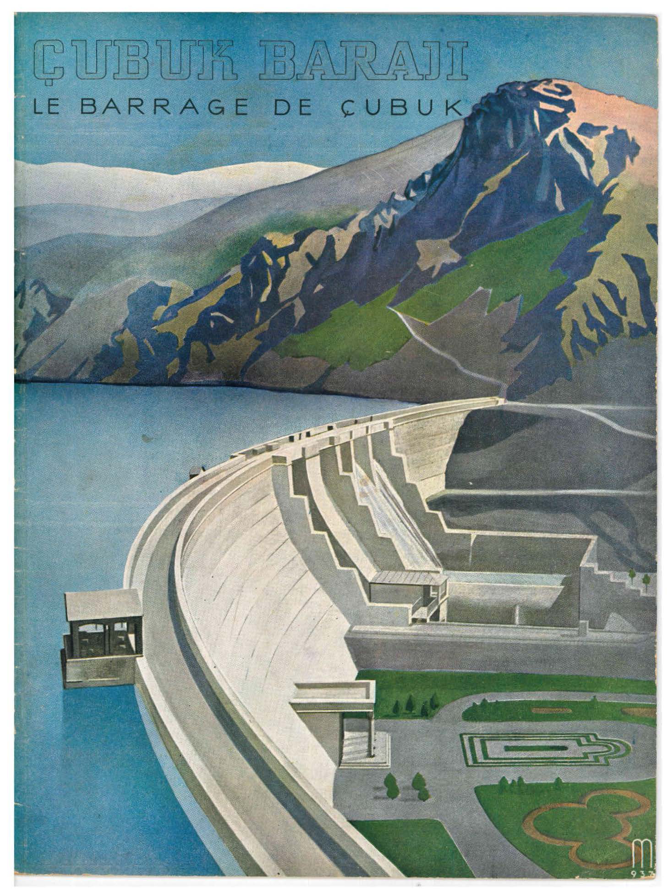
The spatial history of the site is not defined by its erasure, but by its incomplete, continuous transformation. The environment does not exist as a passive backdrop; rather, every material alteration is bound to its ecological origin, progressing not as a linear teleology, but as a circular completion. This asynchronous cycle operates through three interconnected phases:
Beginning with the foundational bio-infrastructure of the Arkhe, the landscape is actively produced and mobilized through the structural hegemony of the Tekton, only to inevitably fracture and dissolve via Entropy. This metabolic chain is profoundly interrelated; each phase is not an isolated epoch, but a dialectical necessity that takes root in the material conditions of its predecessor while actively setting the stage for its successor. The Arkhe provides the ecological substrate that the Tekton engineers into a second nature, a constructed environment that, upon reaching its material and systemic limits, collapses into an entropic state. Yet, this Entropy is deeply generative, effectively composting the ruined infrastructure back into the soil to establish a new, historically altered Arkhe.
Through this continuous dialectic, the site forms a spatial helix that rises by layering upon itself. After multiple full cycles, the underlying mechanism of socio-spatial reproduction remains an absolute constant, even as the physical context and material realities drastically shift. Ultimately, the metaphorical cylinder of the site acts as a stable, deep-geological memory for this environmental history. No matter the scale or intensity of the spatial fixes we impose, every newly deposited and engineered layer eventually metabolizes, projectively tethering the newest spatial reality to the very ground where it originated.
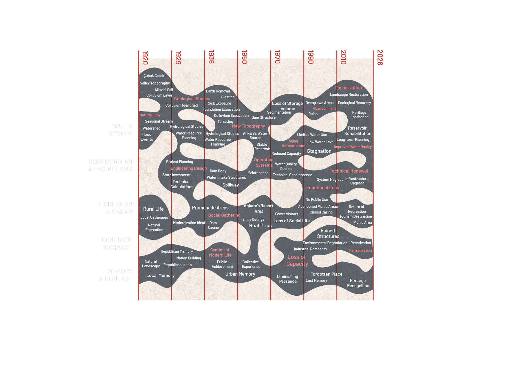
The Çubuk basin's Arkhe is defined by an ephemeral, seasonal water system rather than abundant accumulation.
The dam's 700 km² catchment area is situated in a strictly water-scarce region, receiving an average annual precipitation of only ~250 mm (comprising both rain and snow).
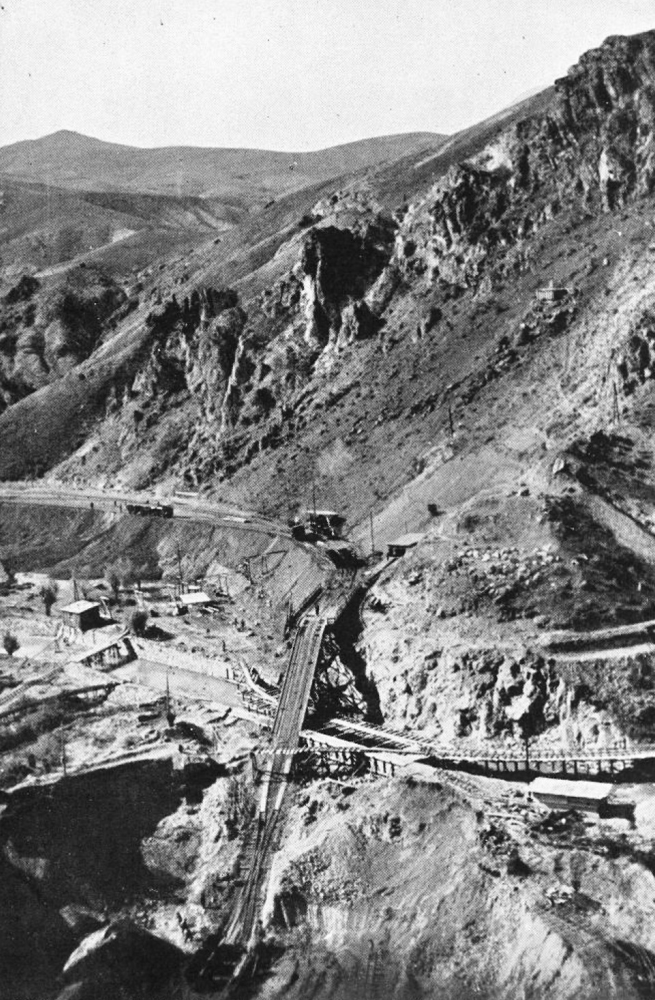
The spatial ambition of the Çubuk Dam was fundamentally at odds with the environmental reality of its site. By imposing a massive infrastructure onto a low-precipitation basin, the modernization project demanded an extraction of water that pushed the regional ecosystem to the limits of its metabolic capacity, transforming a seasonal watershed into a heavily regulated urban reservoir.
The site's geology did not passively accept construction; the initial bedrock found at a 17m depth was weathered and saturated with pyrite (FeS), actively threatening the durability of any intervention.
Bypassing further weak structural layers at 20m, engineers were forced to excavate through soft, dissolving kaolin down to 28–33 m to find stable ground, requiring extensive tie-back retaining walls to safely enforce the Tekton.
To stave off the inevitable Entropy threatened by the pyrite-rich soil, trass was actively added to the concrete mix to neutralize deterioration, while copper waterstops were embedded at the joints to enforce absolute watertightness.
A highly controlled drainage system, cast from permeable, sand-free concrete and arrayed in a grid, was installed 1.75 m behind the upstream face to manage hydrostatic pressure and internal water flows.
To sustain this structural hegemony and delay the inevitable onset of Entropy, the dam required a highly specific, engineered second nature. This system functions as the dam's artificial metabolism, continuously managing hydrostatic pressure and internal flows to prolong the survival of the Tekton against the relentless, dissolving forces of the landscape.
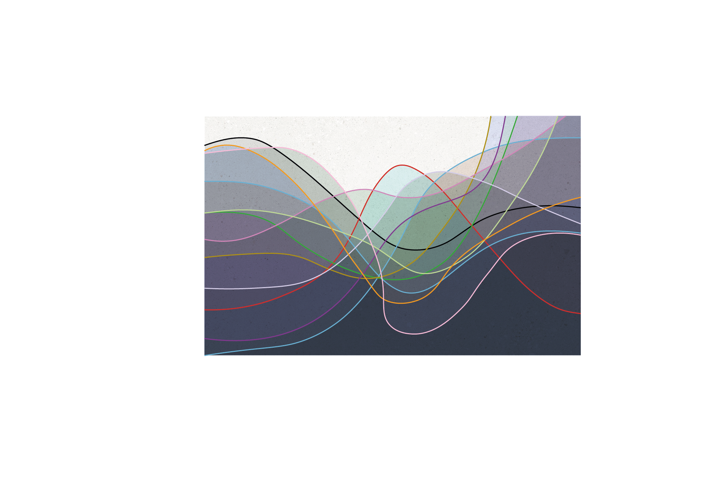
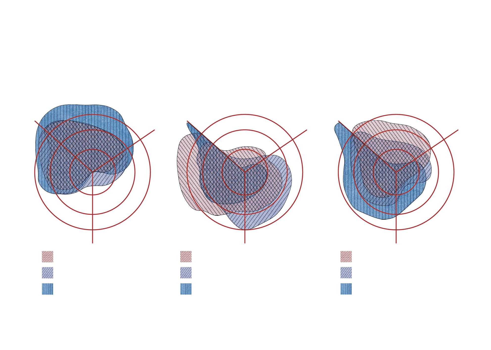
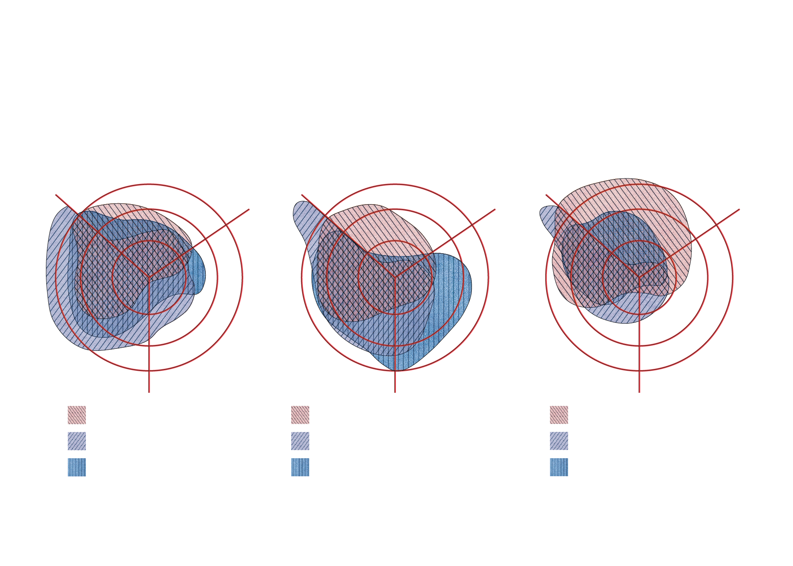
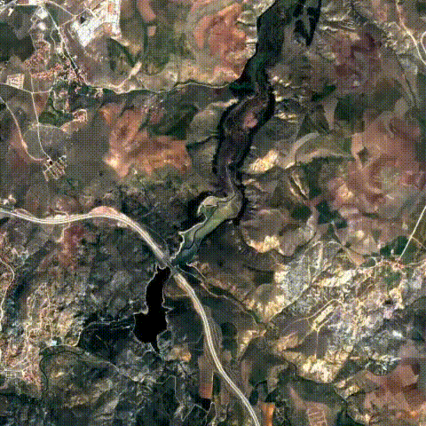
This macro-spatial timelapse captures the helical metabolism of the Çubuk Valley, visualizing the landscape's continuous transformation from an open ecological network into an engineered fix. It begins with the unconstrained Arkhe, representing a state of pure biological homeostasis. In this phase, the natural valley topography dictates high biological permeability and uninterrupted hydrological flow, allowing the bio-infrastructure of the soil to breathe and metabolize without constraint.
The aggressive onset of the Tekton phase overrides this baseline. Driven by state investment and the modernization ideal, the dam infrastructure and creeping urbanization enclose the site. This tectonic expansion actively destroys environmental homeostasis, spiking spatial differentiation and restricting the permeability of the critical zone. This in turn forces the active pedogenesis of the soil either underground or submerges it underwater, masking the biological labor required to sustain the natural environment.
However, as the timeline progresses toward environmental degradation and functional loss, the imagery reveals the slow, relentless transition into Entropy. This phase fundamentally rejects any narrative of human exceptionalism in environmental design. The expanding footprint of sedimentation within the reservoir and the visible pushback of the ecosystem at the edges highlight the site's inherent resilience. On a macroscopic scale, the constructed environment is continually being digested; the rigid cells of the urban and infrastructural grid are broken down, proving that human mastery is ultimately composted back into the earth to synthesize the next cycle of life.
The waterline of the reservoir functions as a dynamic, metabolic boundary rather than a static edge. Driven by the environmental reality of seasonal and annual precipitation, its continuous expansion and regression visually map the ongoing friction between the cycles.
When precipitation is high, the expanding waterline asserts the structural hegemony of the dam, submerging the critical zone, enforcing the tectonic order, and temporarily halting surface-level waterline biology. However, as the water regresses during seasonal cycles, it exposes the inherent vulnerability of the site. This regression unveils the heavy accumulation of sediment along the banks. More crucially, it temporarily releases the site into localized Entropy. In these exposed, liminal margins, the suppressed bio-infrastructure briefly reclaims the soil before the tectonic cycle inevitably submerges them once again.
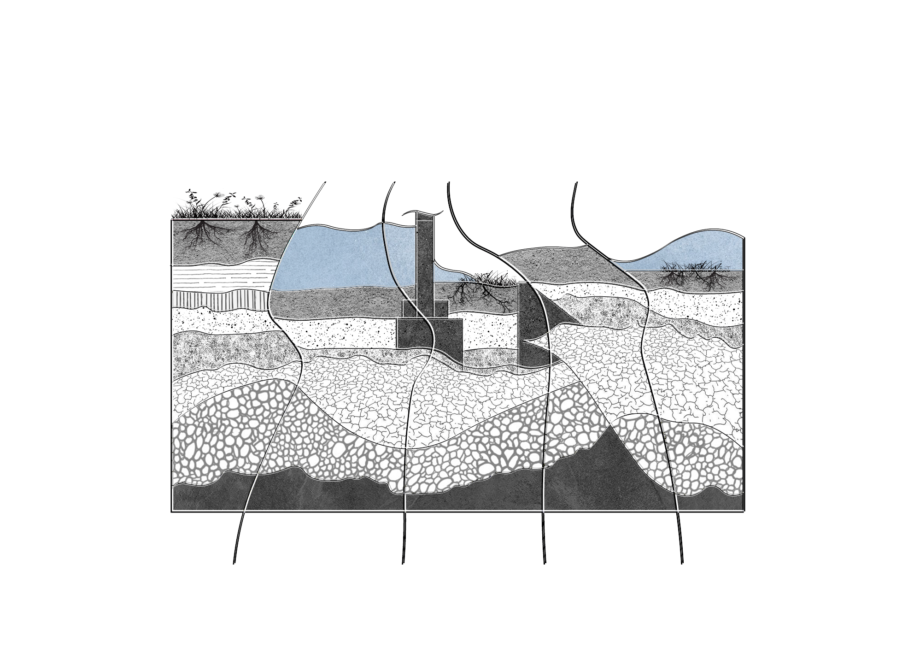
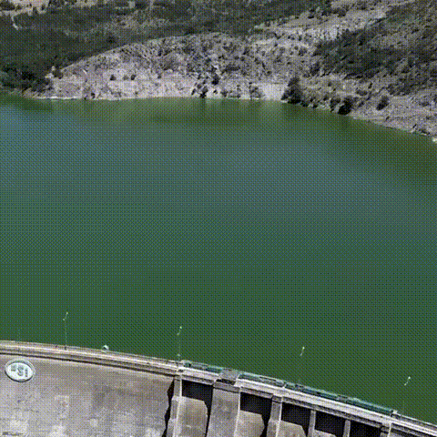
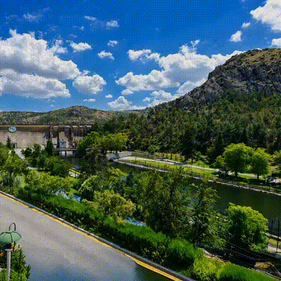
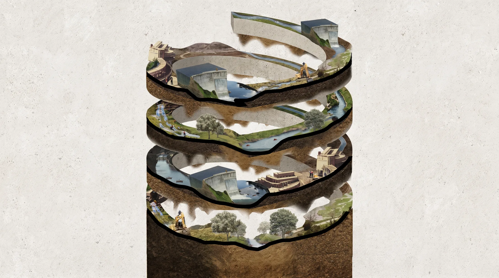